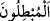

kavminin inatla yalanlaması karşısında da direnip zafere erişmiştir. Sen de bunlar gibi
direnip sabret de bunlar gibi zafere ulaş!
Mesnevî’den:
Hak yüz binlerce iksir yaratmıştır ama
İnsan sabır gibi etkili bir iksir görmemiştir.
“Allah’ın” dünyadaki veya âhiretteki azâba dâir “emri gelince” peygamberler ile
onları yalanlayanlar arasında “hak uygulanır” yâni hak taraftarları kurtarılır “ve o
zaman” yâni Allah’ın buyruğu geldiğinde “bâtılı seçenler” yâni boşa uğraşanlar, yâni
herhangi bir sınırlandırma olmaksızın bütün bâtıl taraftarları -ki bütün inatçılar ve bu
arada
senden
mûcize
isteyenler
buraya
öncelikle
dâhildirler-
“hüsrana
uğrayacaklardır.” Helâk olacaklar veya zaten hüsranda olduklarını kesin olarak
anlayacaklardır.
Kamus’ta der ki: “Bâtıl” hakkın zıddıdır. (Âyetteki “
” lâfzının fiil-i mâzîsi
olan) “
” fiili “bâtılı getirdi” demektir. Buna göre “mubtıl”, bâtıl taraftarı ve bâtıla
sımsıkı sarılan demektir. Nitekim “muhıkk” da hak taraftarı ve hakka göre hareket eden,
demektir. Burada “İşte o zaman kâfirler hüsrâna uğrayacaklardır!” buyurmadı. Çünkü
Burhânü’l-Kur’an’da geçtiği üzere bâtılın tam zıddı hak olduğu içindir. Yani ayette
“hakka göre hükmedileceği” belirtildiği için, sonunda “bâtılı seçenler” denmiş
olmaktadır.
Âyette; Allah’ın azap ve ölüme dâir hüküm ve buyruğu henüz gelmeden O’na
dönülmesi gerektiğine işâret edilmektedir. Çünkü aksi takdirde hüzün ve tasadan başka
bir şey çekilmez!
[Sadî, Bustan’da der ki:]
Sen cezaya çarpılmadan önce af kapısını çal.
Dayak altında feryat etmenin faydası yoktur.
Ömrünün sermayesini telef ettikten sonra
Pişmanlıktan ne kazanırsın?
Bir kimse kötülük yapmış bile olsa, kıyametten evvel kendini derler toplarsa fenalık
yapmış sayılmaz.
[207]. Tirmizî, Şemâil (thk. İzzet Ubeyd), Humus 1991, s. 154, hadis no: 314.
[208]. bk. Saati, Fethu’r-rabbânî, XX, 35-36.
[209]. İbn Kesir, Tefsir, I, 586.
[210]. İbn Kesir, IV, 144.